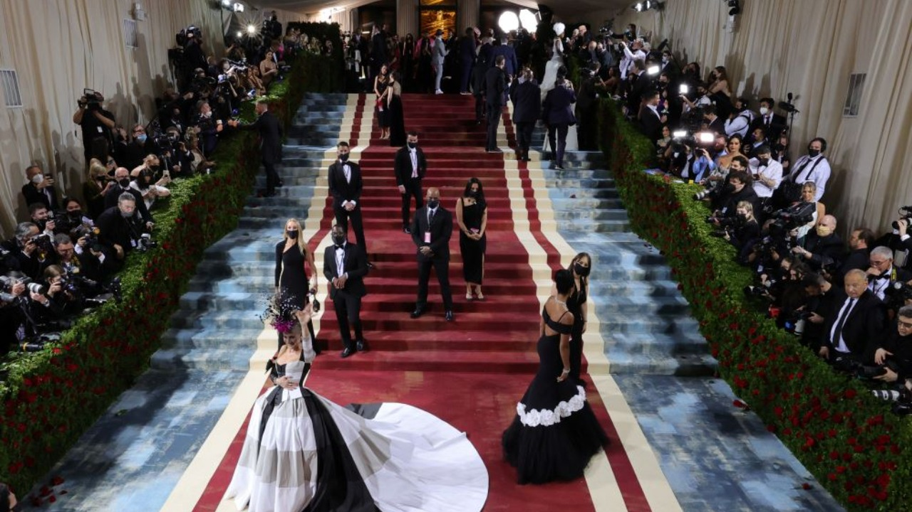

O Met Gala é um evento realizado anualmente pelo Metropolitan Museum of Art (Museu Metropolitano de Arte) de Nova York, ele é considerado um dos mais importantes eventos de moda dos Estados Unidos.
Todos os anos, celebridades desfilam no tapete vermelho do Met com roupas feitas por estilistas renomados. Um dos objetivos da ocasião, cujo nome oficial é "Evento Beneficente do Instituto de Vestuário do Met", é arrecadar fundos para o museu.
COMO PARTICIPAR?
Há um preço salgado a se o desejo é participar do Met Gala. Segundo o New York Times, um ingresso para o baile custa US$ 35 MIl(R$171,5mil) e mesas variam entre US$200 mil e US$300 mil dólares (R$980 mil e R$ 1,4 milhão).
Não basta, entretanto, desembolsar o dinherio. Anna Wintour, editora da vogue americana e diretora artística da Condé Nast, assumiu a direção da festa em 1999, decide quem será convidado, mesmo que uma marca esteja patrocinando a ida dele ou dela ao baile. Isso significa que, mesmo que uma empresa compre uma mesa, a companhia não pode escolher todos os que se sentam nela.
Como foi no ano passado?
Para a edição de 2021, transferida de maio para setembro por conta da pandemia - após um cancelamento total em 2020 -, o evento foi marcado pela cantora americana Billie Eilish, transformada em Marylin Monroe com cabelo loiro platinado e vestido com cauda Oscar de la Renta na cor pêssego.
A musa da esquerda americana Alexandria Ocasio-Cortez também causou sensação com seu vestido marfim, desenhado pela estilista do Brooklyn Aurora James, riscado com letras vermelhas para formar as palavras "TAX THE RICH" (taxem os ricos).
